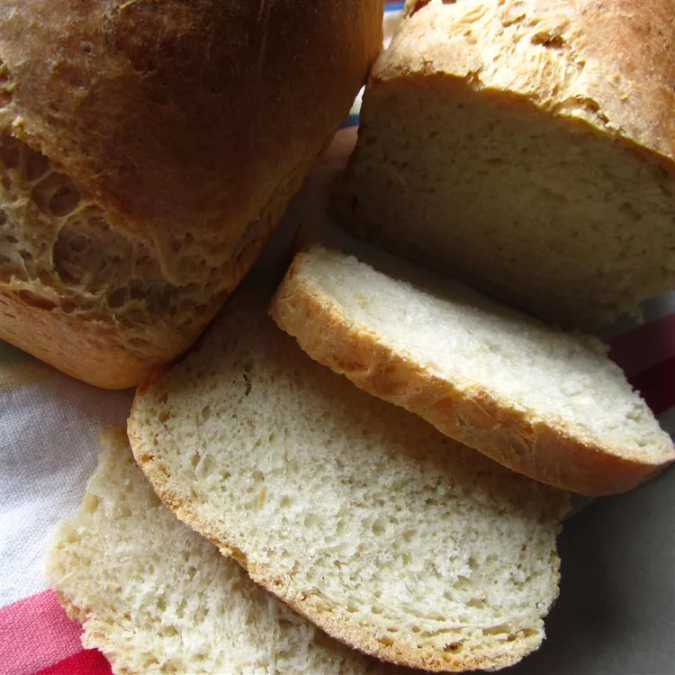

Olive Oil Bread
Mini Cheese Cakes

Description
Fluffy little clouds. Makes great sandwhiches or goes well with soup!
- ½ cup warm water 110 degrees F / 45 degrees C
- 2 ¼ teaspoons active dry yeast
- 1 teaspoon white sugar
- 1 teaspoon salt
- 4 tablespoons olive oil
- 2 ½ cups all-purpose flour
Directions
- In a large bowl mix together the warm water (110 degrees), yeast, sugar, salt, and olive oil. Stir in 2 cups of the flour in order to make a soft ball. Knead in additional flour so that dough is soft and not sticky. Place kneaded dough in a medium size greased bowl. Cover and let rise until doubled in size.
- Punch down dough, and form into ball or loaf shape. Place onto a greased cookie sheet. Cover and let rise for 15 to 20 minutes. Preheat the oven to 375 degrees F 190 degrees C.
- Bake in the preheated oven for 30 to 40 minutes, until golden brown.
- Serve and Enjoy!
Home